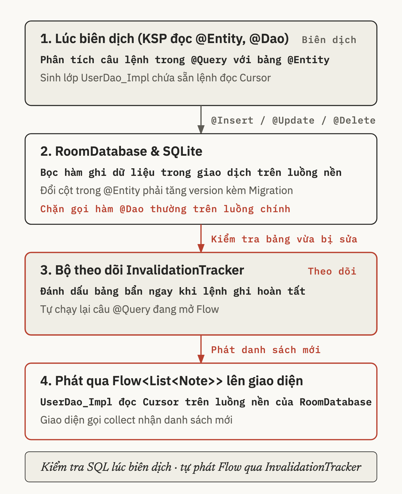

Room
Bản 30 giây
Khi viết truy vấn SQL bằng chuỗi chữ thường, chỉ cần gõ sai tên cột là ứng dụng sập lúc mở màn hình. Room kiểm tra toàn bộ câu lệnh SQL ngay lúc biên dịch. Nó cũng tự viết sẵn code chuyển từng dòng dữ liệu thành đối tượng Kotlin và đẩy danh sách mới lên giao diện.
Cần biết trước
Vấn đề buộc nó ra đời
Từ những ngày đầu của Android, lập trình viên phải làm việc trực tiếp với SQLiteOpenHelper và con trỏ dữ liệu Cursor. Bạn phải tự ghép từng chuỗi SQL bằng tay và gọi getColumnIndex để đọc từng cột ra đối tượng.
Nếu gõ sai tên bảng hoặc đổi cấu trúc cột mà quên sửa chuỗi SQL, trình biên dịch hoàn toàn không báo lỗi. Ứng dụng chỉ sập với lỗi SQLiteException khi người dùng bấm tới đúng màn hình chạy câu truy vấn đó. Hơn nữa, mỗi khi thêm dữ liệu mới, màn hình không tự biết để vẽ lại nếu bạn không tự viết code thông báo.
Tại sự kiện Google I/O tháng 5/2017, Google ra mắt thư viện Room trong bộ Android Architecture Components (bản 1.0.0 cuối năm 2017). Room chặn lỗi cú pháp SQL ngay lúc build và nối thẳng bảng dữ liệu với luồng quan sát của giao diện.
Nó thực sự là cái gì
Room không phải là một hệ quản trị cơ sở dữ liệu mới thay thế cho SQLite có sẵn trong nhân Android. Thực chất, nó là một bộ sinh mã lúc biên dịch (compile-time code generator) bọc bên ngoài SQLite. Trình xử lý KSP đọc @Entity, @Dao, @Database để sinh các lớp _Impl chạy Cursor và quản lý giao dịch ở bên dưới.
Cơ chế

Lúc biên dịch, trình xử lý của Room phân tích câu lệnh trong @Query và đối chiếu với các bảng @Entity. Nếu tên cột sai, quá trình build dừng ngay; nếu đúng, nó sinh ra lớp cụ thể như UserDao_Impl chứa sẵn lệnh đọc Cursor. Khi ứng dụng chạy, bộ theo dõi InvalidationTracker giữ danh sách các bảng đang được lắng nghe qua Flow. Hễ lệnh @Insert, @Update hay @Delete chạm vào bảng, InvalidationTracker đánh dấu bảng bẩn và tự chạy lại @Query để phát danh sách mới.
Đánh đổi
Bạn bắt được lỗi gõ sai SQL trước khi xuất ứng dụng và không phải tự đóng mở Cursor. Bạn cũng có sẵn Flow cho kiến trúc Offline-First. Đổi lại, bước sinh mã làm thời gian build dự án dài hơn. Mỗi lần đổi cột trong @Entity, bạn bắt buộc phải tăng version kèm kịch bản Migration.
Nguyên lý gốc
Chuyển việc kiểm tra câu truy vấn từ lúc ứng dụng đang chạy về ngay lúc biên dịch. Nhờ vậy, bạn triệt tiêu được lỗi gõ sai tên bảng và cột.
Key insight
Roomkhông thay thế SQLite, mà sinh sẵn code đọcCursorlúc biên dịch và dùngInvalidationTrackertự phátFlowkhi bảng đổi.
Khuôn mẫu chuẩn
@Entity(tableName = "notes")
data class Note(@PrimaryKey val id: Int, val text: String)
@Dao
interface NoteDao {
@Query("SELECT * FROM notes")
fun observeAll(): Flow<List<Note>>
@Insert(onConflict = OnConflictStrategy.REPLACE)
suspend fun save(note: Note)
}
Bẫy & ranh giới
Nếu bạn sửa lớp @Entity và tăng version mà quên viết Migration, ứng dụng nâng cấp lên sẽ sập ngay với lỗi IllegalStateException. Ngược lại, nếu bật fallbackToDestructiveMigration() trên bản phát hành thật, Room sẽ xóa trắng toàn bộ dữ liệu cũ của người dùng khi đổi version. Tuyệt đối không tạo mới RoomDatabase ở mỗi màn hình vì mở nhiều kết nối SQLite cùng lúc rất tốn RAM và dễ khóa bảng. Gọi hàm @Dao thường (không suspend, không trả Flow) trên luồng chính cũng làm ứng dụng sập vì Room chặn khóa giao diện.
Câu hỏi thực chiến
Hỏi: Hàm trong Dao trả về Flow thì có cần gắn thêm từ khóa suspend ở đầu hàm không?
Không cần và không nên. Bản thân Flow chỉ là công thức khai báo luồng dữ liệu. Khi bạn gọi collect, Room đã tự đẩy truy vấn SQL xuống luồng nền của RoomDatabase.
Hỏi: Làm sao Room biết bảng vừa có dòng mới để phát dữ liệu qua Flow khi SQLite vốn là thư viện C cũ?
Khi có nơi lắng nghe một bảng, InvalidationTracker cài trigger SQLite (lệnh tự chạy khi bảng bị ghi) để đánh dấu bảng đó. Ngay khi lệnh ghi hoàn tất, InvalidationTracker kiểm tra bảng vừa bị sửa rồi tự gọi lại các hàm @Query đang mở Flow.
Hỏi: Khi nào mới được dùng allowMainThreadQueries() lúc khởi tạo RoomDatabase? Chỉ dùng trong bài kiểm thử ngắn trên máy ảo hoặc thiết bị test. Khi đó bạn muốn kiểm tra kết quả tuần tự ngay lập tức. Tuyệt đối không bật hàm này ở ứng dụng thật vì đọc đĩa SQLite trên luồng chính sẽ gây giật hoặc treo màn hình.
Hỏi: Muốn thêm một cột mới vào bảng ở bản cập nhật ứng dụng tiếp theo mà không mất dữ liệu người dùng thì làm thế nào?
Bạn tăng số version trong @Database lên một đơn vị. Sau đó, bạn dùng @AutoMigration hoặc viết một đối tượng Migration chạy lệnh ALTER TABLE rồi truyền vào addMigrations() lúc dựng RoomDatabase.
Ý bắt buộc khi giải thích lại
- Giải thích được Room sinh các lớp _Impl lúc biên dịch để kiểm tra cú pháp SQL và tự chuyển Cursor thành đối tượng Kotlin.
- Trình bày được cơ chế InvalidationTracker theo dõi các lệnh thêm, sửa, xóa để tự chạy lại truy vấn và đẩy dữ liệu mới vào Flow.
- Chỉ ra được bẫy thiếu Migration gây sập IllegalStateException, bẫy mất sạch dữ liệu do fallbackToDestructiveMigration() và lý do RoomDatabase phải là singleton.
- Viết lại được khuôn mẫu chuẩn từ trí nhớ.
Nguồn
- Save data in a local database using Room — Android Developers
- Migrate your Room database — Android Developers
- InvalidationTracker API reference — Android Developers
- Room release notes — Android Developers